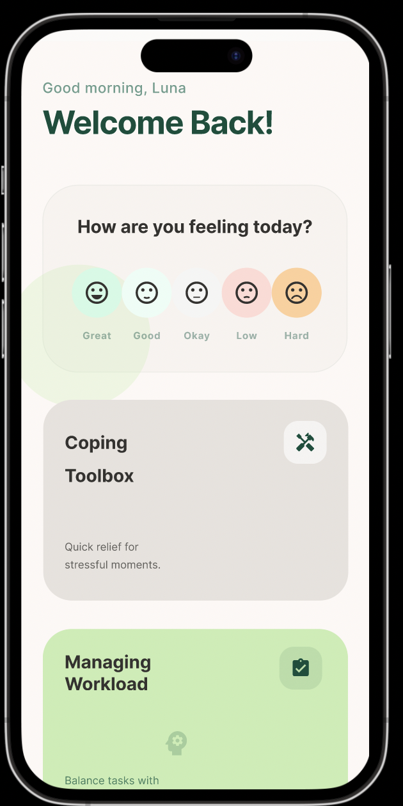
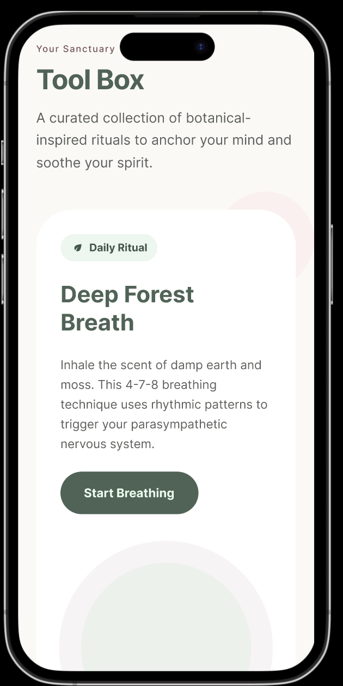
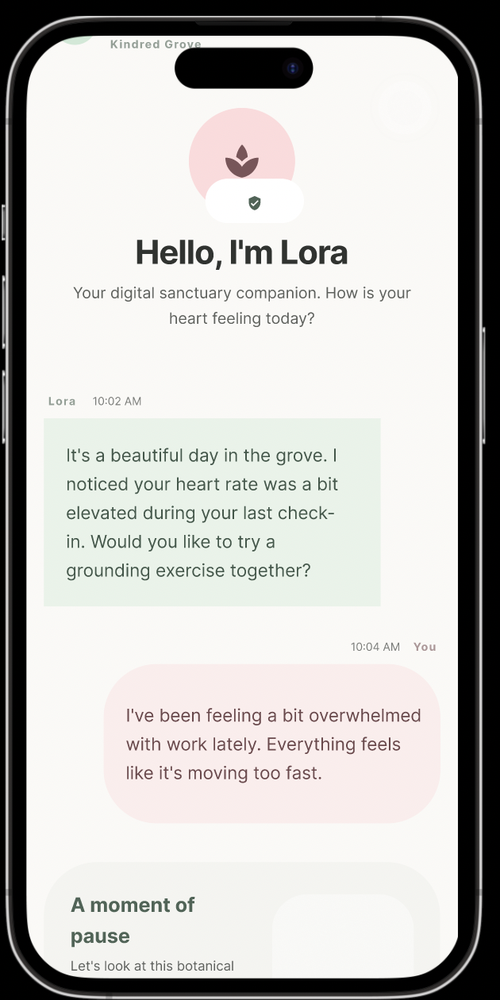

Hero image or screen recording goes here
A mindfulness and relaxation app designed to help users manage stress through guided meditation, breathing exercises, and mood tracking.
Many people struggle with stress but find existing meditation apps overwhelming or difficult to use. Calmora explores a simple and user-friendly solution to encourage mindfulness in daily life, meeting users where they are rather than where an app expects them to be.
Many users struggle to maintain daily wellness habits due to busy schedules and lack of guidance.
Design an intuitive mobile app that encourages consistent wellness routines and promotes mental well-being.
Through user interviews and surveys, two primary personas emerged that shaped every design decision throughout the project.
"I want to meditate but every app I download feels like another thing I have to maintain. I just need something that fits into my morning without me having to think about it."
"Exam season completely breaks me. I know I need to take care of my mental health but I do not know where to start and I cannot afford therapy right now."
Features were mapped across four quadrants based on urgency and importance, ensuring the core wellness tools were scoped into the MVP and non-essential features were deferred or cut entirely.
Two core task flows were mapped across the actual app screens to ensure every step felt natural and required no explanation.
Sample size: 4 users
Low-fidelity wireframes were used to test the core navigation flow and information hierarchy before committing to any visual direction. The goal was to confirm that users could reach any key feature within three taps or fewer.



